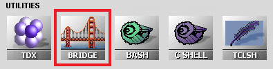

main menu
| module menu
| << previous section
| next section >>
main menu
| module menu
| << previous section
| next section >>
TCAD to SPICE
1. Setting Up the Tool Flow: Bridging and Mapping
1.1 Overview
1.2 Bridging
1.3 Bridging Example
1.4 Mapping
1.5 Mapping Example
1.6 Conclusions
Objectives
- To introduce the concepts of bridging and mapping to link multiple Sentaurus Workbench projects.
1.1 Overview
The TCAD to SPICE tool flow is a key part of the Synopsys design-technology cooptimization (DTCO) solution, where physical effects modeled in TCAD tools are transferred to the circuit level through SPICE model extraction.
TCAD to SPICE flows always depend on input data being provided by a chosen simulation tool. As a result, TCAD to SPICE flows need to be portable, such that the incoming data can be easily adjusted or replaced with a different process.
The following tutorial describes key features of Sentaurus Workbench bridging between projects (creating a one-way parent-to-child link) and parameter mapping in TCAD to SPICE flows, as shown in Figure 1.
{kind=link}
Figure 1. Basic concepts of bridging and mapping between Sentaurus Workbench projects. (Click image for full-size view.)
There is an inherent limitation to the portability of a specific TCAD to SPICE flow as these are constrained by device architecture. This limitation is imposed by the fact that different device architectures are represented by different SPICE models (such as BSIM4 for bulk devices and BSIM-CMG for FinFETs), which specify geometries and features in different ways, and might have different requirements for data. For example, bulk devices require the modeling of back-bias dependence, but FinFETs do not.
The complete project can be investigated from within Sentaurus Workbench in the directory Applications_Library/GettingStarted/tcadtospice/setup/DB_tutorial.
A pre-executed project is also included, which contains input data for the above project, and can be found in the directory Applications_Library/GettingStarted/tcadtospice/setup/ 14nmFinFETSentaurus_PltOnly.
1.2 Bridging
Bridging creates a one-way link between a source Sentaurus Workbench project (parent project) and a target project (child project). This link allows for:
- Re-creating a full or partial subset of splits from the parent project in the child project
- Permitting the child project to access any variable or parameter in the parent project
- Permitting the child project to refer to any node in the parent project
To set up a child project, open a clean Sentaurus Workbench project and select the Bridge tool as highlighted in Figure 2.

Figure 2. Bridge tool in the Select DB Tool dialog box.
The command file of the Bridge tool has some simple parameters that must be defined:
- Parent sets the path to the Sentaurus Workbench parent project.
- ptools defines a list of parent project tools that must be addressable in the child project.
- pvars defines a list of parent project variables that must be available in the child project.
The following example describes the required inputs of the command file of the Bridge tool:
#noexec set Parent PATH_TO_PARENT_SWB_DECK set ptools "TOOL1 TOOL2 TOOL3" set pvars "VAR1 VAR2 VAR3"
By default, the child project addresses splits in the scenario "all" of the parent project. You can change it by defining the name of the scenario to be addressed:
set PStoSync "MyScen2"
The Bridge tool is not executed like typical Sentaurus Workbench tools. It is run once through the graphical user interface of Sentaurus Workbench, resulting in a duplication of the parent project structure in the child project. This process is shown in Figure 3.
{kind=link}
Figure 3. Executing the Bridge tool: (upper left) Bridge tool instance in a clean project, (upper right) choosing the Clean and Synchronize With Parent Project command from the context menu, and (bottom) after synchronization, splits match the parent project and variables are bridged across from all tools defined in the "ptools" list. (Click image for full-size view.)
When starting with a new parent–child project combination, right-click the Bridge tool icon and choose the Clean and Synchronize With Parent Project command. With this command, any existing nodes in the child project are erased and replaced with splits that match the setup of the parent project. This is the only time you need to interact with the Bridge tool – individual split nodes do not need to be executed (in fact, this is usually deactivated by adding the #noexec command in the command file of the Bridge tool).
The Synchronize With Parent Project command also performs a synchronization. However, it does not remove old child project simulation results. This command is more rarely used.
Any tools in the child project AFTER the Bridge tool, with existing Sentaurus Workbench parameters, are reset to default parameter values.
The Bridge tool enables the use of some bridge-specific Sentaurus Workbench variables that allow you to access information from the parent project. These variables are the same as standard Sentaurus Workbench preprocessor variables prefixed with p.
| Variable (Bridging) | Variable (Typical) | Meaning in parent project |
|---|---|---|
| @ppwd@ | @pwd@ | Path |
| @pnode|TOOL@ | @node|TOOL@ | Matching node on tool |
| @pprojorg@ | @projorg@ | Mode (traditional or hierarchical) |
| @ppwdout@ | @pwdout@ | Output directory in hierarchical mode |
| @pnodedir@ | @nodedir@ | Node directory in hierarchical mode |
| @plogsdir@ | @logsdir@ | Log directory in hierarchical mode |
1.3 Bridging Example
In this example, the parent project is called 14nmFinFETSentaurus_PltOnly and the child project is called DB_tutorial. This is defined in the command file of the Bridge tool of the DB_tutorial project:
#noexec set Parent "../14nmFinFETSentaurus_PltOnly" set ptools "sprocess IdVg IdVd CV"
The parameters from the sprocess, IdVg, IdVd, and CV tool instances in the parent project are transferred to the child project. Figure 4 shows the child project input file, with the parameters from different tool instances of the parent project highlighted.
{kind=link}
Figure 4. Example child project with the parameters related to each tool in the parent project highlighted. (Click image for full-size view.)
Examples of the usage of preprocessor variables specific to the Bridge tool can be found in the tool instance UploadData, which is shown in the DB_tutorial project. This example utilizes the output of Sentaurus Device simulations from the parent project in traditional project organization and uploads the output to the TCAD to SPICE database for use in later SPICE model fitting.
In the following code example, the paths to the IdVg and IdVd tool instance outputs are constructed using the @ppwd@ and @pnode|TOOL@ Sentaurus Workbench variables:
upload_data_iv = ["@ppwd@/IdVg_0_n@pnode|IdVg@_des.plt",
"@ppwd@/IdVg_1_n@pnode|IdVg@_des.plt",
"@ppwd@/IdVd_0_n@pnode|IdVd@_des.plt",
"@ppwd@/IdVd_1_n@pnode|IdVd@_des.plt",
"@ppwd@/IdVd_2_n@pnode|IdVd@_des.plt"]
Click to view the command file for the Bridge tool instance bridge_tcl.cmd.
1.4 Mapping
While the bridging capability allows you to link Sentaurus Workbench projects, there is no inherent capability to link precreated projects and to ensure that parameter definitions are consistent between them.
In the specific example of TCAD to SPICE flows, the core of parent and child projects is created in isolation, and it is important to be able to reuse child projects with different parent projects. In Figure 5, three different parent projects are considered, which could represent different technology generations or flavors, with some parameterization where the parameter or variable labels differ. Instead of restructuring the child project for each change in the parent project, you use the parameter mapping capabilities of the Bridge tool to link the parent project parameters to appropriate child project parameters.
{kind=link}
Figure 5. Mapping with multiple different input projects but one child project. (Click image for full-size view.)
1.5 Mapping Example
In the Mapping tool instance of the DB_tutorial project, you see a practical example of this mapping capability. Here, the translation between parameters is achieved through the creation of Sentaurus Workbench variables required by the child project. This example uses a simple Python mapping function, which is implemented in the SWB Python environment. The syntax is shown here:
par_mapping(cval="lgate", pval={"L":"@L@"}, fac=1e-6) # convert to meters
where:
- cval is the child project label.
- pval is the parent project label and value.
- fac is a scaling factor, which can be applied during mapping. In this case, you map from um to m as this is the required unit in SPICE simulation.
The mapped variables appear at the end of the Sentaurus Workbench project, as typical Sentaurus Workbench variables. This process is illustrated in Figure 6.
{kind=link}
Figure 6. A "bridged" parameter before and after mapping. (Click image for full-size view.)
The Mapping tool instance can be treated as a list of required input parameters or information for the correct operation of the child project. In the DB_tutorial project, you have the requirement that the following mapping parameters exist in the parent project.
| Mapped variable | Parent parameter | Description |
|---|---|---|
| Type | Type | Device type, either "nMOS" or "pMOS". In this case, the mapping has no effect because the parameter name matches. |
| workfn | WF | Workfunction. Used as the initial value of the PHIG parameter of the SPICE model. |
| drain_con | Name of the drain terminal in the I–V simulation, used throughout the flow. | |
| gate_con | Name of the gate terminal in the I–V simulation, used throughout the flow. | |
| source_con | Name of the source terminal in the I–V simulation, used throughout the flow. | |
| bulk_con | Name of the substrate terminal in the I–V simulation, used throughout the flow. | |
| acdrain_con | Name of the drain terminal in the C–V simulation, used throughout the flow. | |
| acgate_con | Name of the gate terminal in the C–V simulation, used throughout the flow. | |
| acsource_con | Name of the source terminal in the C–V simulation, used throughout the flow. | |
| acbulk_con | Name of the substrate terminal in the C–V simulation, used throughout the flow. | |
| Vdd_nom | Vdd | Nominal supply voltage, Vdd for high-drain Id–Vg. |
| Vdd_lin | Vdd_Lin | Vdd for low-drain Id–Vg. |
| temp | Temperature (in kelvin) of TCAD simulation. Used for temperature of SPICE simulation. | |
| lgate | L | Gate length; required SPICE model instance parameter. |
| hfin | H | Fin height; key SPICE model parameter. |
| tfin | W | Fin thickness; key SPICE model parameter. |
| afin | a_fin | (Optional) Specific split parameter for this parent project. |
| tspace | t_spacer | (Optional) Specific split parameter for this parent project. |
| rsc | rcx | Contact resistance parameter for source. Used to define the resistance components of the SPICE model subcircuit. |
| rdc | rcx | Contact resistance parameter for drain. Used to define the resistance components of the SPICE model subcircuit. |
Click to view the mapping Python file Mapping_eng.py.
1.6 Conclusions
This tutorial has described key features of Sentaurus Workbench bridging between projects (creating a one-way parent-to-child link) and parameter mapping in TCAD to SPICE flows.
Bridging creates a one-way link between a source Sentaurus Workbench project (parent project) and a target project (child project), which allows the following:
- Re-creating the same set of splits from the parent project in the child project
- Permitting the child project to access any variable or parameter in the parent project
- Permitting the child project to refer to any node in the parent project
Mapping assigns a set of variables used in the parent project (that might differ from project to project) to a predefined and fixed set of variable names in the child project. This facilitates the reuse of child projects with different versions of the parent project by focusing all the required modifications to variable names in a single tool instance (Mapping) instead of across multiple tool instances.
main menu | module menu | << previous section | next section >>
Copyright © 2022 Synopsys, Inc. All rights reserved.